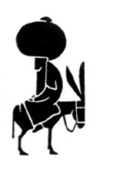

Toward a secret sky
“This is love: to fly toward a secret sky, to cause a hundred veils to fall each moment. First to let go of life. Finally, to take a step without feet.” – Rumi

No, this is not a hipster poetry blog. It is a blog about programming.
Here are some recent posts. You can find a full list of posts in the archive.
| September 9, 2013 | Buffered SHA1 in Dart with a StreamTransformer |
| July 29, 2013 | The British Scale of Excellence |
| July 26, 2013 | Using Go as an HTTP+JSON client |